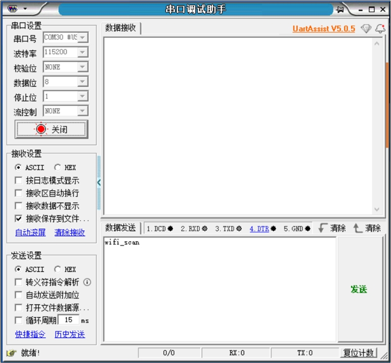
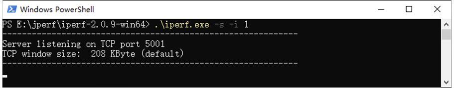
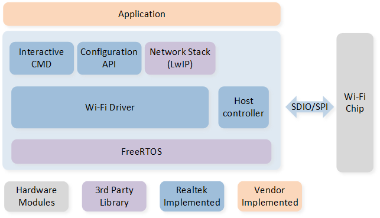
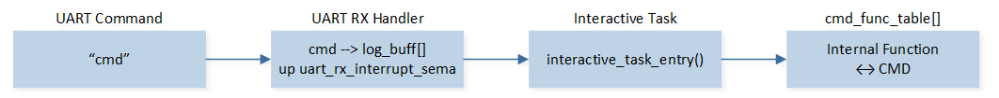

RTL8189FTV Wi-Fi Module
本文档旨在指导开发者快速配置RTL8189FTV Wi-Fi（下文简称Wi-Fi）的开发环境，包括软硬件需求、宏定义配置、测试步骤以及代码框架分析等。
环境需求
RTL87x2G Model B EVB
RTL8189FTV Wi-Fi模组
ARM Keil MDK: https://developer.arm.com
BeeMPTool_kits: RealMCU
DebugAnalyzer: RealMCU
UartAssist: http://www.cmsoft.cn/resource/101.html
iperf: https://iperf.fr/
更多信息请参阅 快速入门。
硬件连线
调试Wi-Fi功能需要在Model B EVB上装配Wi-Fi模块。Wi-Fi模块在EVB上的安装位置参考 Wi-Fi安装接口图 中红色框标注的部分。 Wi-Fi模块及其安装方式参考 Wi-Fi模组。

Wi-Fi安装接口图

Wi-Fi模组
RTL87x2G支持以SPI和SDIO两种接口与Wi-Fi模块进行通信。
在采用SDIO接口时，RTL87x2G的引脚配置是固定的，详细信息请参照 引脚定义表 进行查阅。
当采用SPI接口时，引脚配置则变得更为灵活，允许开发者根据实际需求进行调整。
Model B EVB |
SDIO |
SPI |
|---|---|---|
GND |
GND |
GND |
P9_4 |
CLK |
CLK |
P9_5 |
D3 |
CS |
P9_6 |
D2 |
x |
P9_3 |
CMD |
MOSI |
P10_0 |
D0 |
MISO |
P9_7 |
D1 |
INT |
VDD |
VDD |
VDD |
提示
使用SPI接口时， 引脚定义表 中所示为默认的引脚配置，如需变更，可在 subsys\wifi_nic_driver\src\spi_module.c 文件中进行修改。
此外，由于Model B EVB上Ethernet模块和Wi-Fi模块共用同一组SDIO接口，因此在使用Wi-Fi模块前需要参考 Model B评估板 文档中 以太网与 SDIO 接口切换 章节自行完成硬件接口切换。 详细的EVB介绍请参考 评估板指南 。
配置选项
宏定义 |
功能描述 |
|---|---|
xxx_TASK_PRIORITY |
用于配置各task的优先级。 |
PERIPHERAL_TYPE |
用于配置Wi-Fi HCI接口类型 (SDIO/SPI)。 |
SDIO_CLK_kHz |
配置SDIO的CLK。 |
SDIO_DATA_WIDTH |
配置SDIO信号传输模式， |
SUPPORT_INTERACTIVE_MODE |
用于配置是否启用UART调试功能， |
SUPPORT_FEATURE_SNTP |
用于配置是否启用SNTP功能， |
SUPPORT_FEATURE_HTTP |
用于配置是否启用HTTP功能， |
SUPPORT_MSG_SERVER |
用于配置是否启用Message Event处理功能， |
SUPPORT_AUTO_CONNECT |
用于配置是否启用开机自动连接AP功能， |
注意
Wi-Fi相关的宏配置以及常用的API定义在wifi_nic_intf.h中。
其中Fixed parameters下方的宏配置会参与lib文件的编译，因此请勿随意改动。
Variable parameters下方的宏定义开发者可以修改。
编译和下载
此示例可在SDK文件夹中找到：
Project file: samples\wifi_nic\proj\mdk
Project file: samples\wifi_nic\proj\gcc
要构建和运行示例，请执行以下步骤：
打开项目文件。
要构建目标，请按照 快速入门 中 编译 APP Image 章节列出的步骤进行操作。
编译成功后，目录
samples\wifi_nic\proj\mdk\bin下会生成app bin文件app_MP_sdk_xxx.bin。若使用GCC编译，则生成的bin文件位于samples\wifi_nic\proj\gcc\bin。按下EVB板上的复位按钮，EVB板将开始运行。
测试验证
Wi-Fi初始化验证
EVB板上电后，如果有“wifi_nic_on ok”的Log，则代表Wi-Fi初始化正常。
[APP] [wifi_nic] RTL871X: _8051Reset8188: Finish
[APP] [wifi_nic] RTL871X: _FWFreeToGo: Polling FW ready OK! (248, 14ms), REG_MCUFWDL:0x070405c6
[APP] [wifi_nic] RTL871X: rtl8188f_FirmwareDownload: DLFW OK !
[APP] [wifi_nic] RTL871X: rtl8188f_FirmwareDownload success. write_fw:1, 236ms
[APP] [wifi_nic] RTL871X: <=== rtl8188f_FirmwareDownload()
[APP] [wifi_nic] RTL871X: Set RF Chip ID to RF_6052 and RF type to 0.
[APP] [wifi_nic] RTL871X: MAC Address = 2c:c3:e6:be:91:9f
[APP] [wifi_nic] xmit_thread priority = 6 TaskHandle_t addr = 0x123e2c
[APP] [wifi_nic] cmd_thread priority = 3 TaskHandle_t addr = 0x123e14
[APP] [wifi_nic] RTL871X: -871x_drv - dev_open, bup=1
[APP] [wifi_nic] WIFI initialized
[APP] [wifi_nic] wifi_nic_on ok
如果将SUPPORT_AUTO_CONNECT设置为1（默认为1），Wi-Fi在初始化完成后会自动执行wifi_nic_scan()，扫描指定的AP（SSID默认为 86box_demo，密码为 123123123）， 并通过Log打印出扫描的结果。如果没有扫描到指定的AP，则每隔3s执行一次scan操作。
[APP] [wifi_nic] RTL871X: survey done event(129)
[APP] [wifi_nic] RTL871X: +indicate_wx_scan_complete_event
[APP] [wifi_nic] wifi nic scan done user data = 86box_demo
[APP] [wifi_nic] 1:Infra 58:41:20:1a:0c:0f -44 1 6 WPA/WPA2 PSK WN_LG2
[APP] [wifi_nic] 2:Infra f8:6f:b0:18:cb:b6 -46 1 6 Open TP-LINK_CH1
[APP] [wifi_nic] 3:Infra 5c:de:34:10:bb:a0 -46 6 7 WPA/WPA2 PSK CMCC-2X9d
[APP] [wifi_nic] 6:Infra 78:60:5b:3f:99:6d -48 6 6 WPA/WPA2 PSK WN_BT
[APP] [wifi_nic] 7:Infra 62:e6:f9:0b:2f:c2 -56 1 7 WPA2 AES PSK huawei-ax3_2g
[APP] [wifi_nic] 8:Infra 00:19:29:00:88:9f -56 6 7 WPA/WPA2 PSK ChinaNet-2.4G
[APP] [wifi_nic] 9:Infra 9c:9d:7e:57:11:92 -58 1 7 WPA2 AES PSK Redmi_FA2C
...
如果成功扫描到指定的AP，则启动Wi-Fi连接。如果连接AP失败，则继续执行scan。
UART CMD验证
在开发过程中，开发者可以通过UART接口发送特定的CMD来操控Wi-Fi模块。在RTL87x2G上，UART引脚的定义如下：P3_0定义为UART TX，P3_1定义为UART RX，串口波特率默认设置为115200，详细的配置代码可以参考 sdk\samples\wifi_nic\src\wifi_nic_task\uart_transport.c 。PC端 串口参数配置 如下。
{kind=link}

串口参数配置
Wi-Fi Scan
命令 |
wifi_scan |
|---|---|
概述 |
启动Wi-Fi scan功能。 |
格式 |
wifi_scan |
参数 |
无 |
示例 |
wifi_scan |
开发者通过PC端串口工具向RTL87x2G发送 wifi_scan，RTL87x2G接收到命令后，会通过Log进行回显，同时启动Wi-Fi扫描功能，并将Wi-Fi scan的结果也显示出来。
[APP] [wifi_nic] CMD : wifi_scan
[APP] [wifi_nic] [MEM] After do cmd, RAM_TYPE_DATA_ON = 70600, RAM_TYPE_BUFFER_ON = 25000
[APP] [wifi_nic] RTL871X: survey done event(255)
[APP] [wifi_nic] RTL871X: +indicate_wx_scan_complete_event
[APP] [wifi_nic] 1:Infra 58:41:20:1a:0c:0f -44 1 6 WPA/WPA2 PSK WN_LG2
[APP] [wifi_nic] 2:Infra f8:6f:b0:18:cb:b6 -46 1 6 Open TP-LINK_CH1
[APP] [wifi_nic] 3:Infra 5c:de:34:10:bb:a0 -46 6 7 WPA/WPA2 PSK CMCC-2X9d
[APP] [wifi_nic] 6:Infra 78:60:5b:3f:99:6d -48 6 6 WPA/WPA2 PSK WN_BT
[APP] [wifi_nic] 7:Infra 62:e6:f9:0b:2f:c2 -56 1 7 WPA2 AES PSK huawei-ax3_2g
[APP] [wifi_nic] 8:Infra 00:19:29:00:88:9f -56 6 7 WPA/WPA2 PSK ChinaNet-2.4G
[APP] [wifi_nic] 9:Infra 9c:9d:7e:57:11:92 -58 1 7 WPA2 AES PSK Redmi_FA2C
...
Wi-Fi Connect
命令 |
wifi_connect |
|---|---|
概述 |
连接指定的AP。 |
格式 |
wifi_connect <SSID> [PASSWORD] |
参数 |
SSID: AP的SSID名称。 PASSWORD: AP的连接密码。 |
示例 |
wifi_connect 86box_demo 123123123 |
以连接ssid为86box_demo的AP为例，开发者通过PC端串口工具向RTL87x2G发送 wifi_connect 86box_demo 123123123，RTL87x2G接收到命令后会启动Wi-Fi连接功能。
[APP] [wifi_nic] CMD : wifi_connect 86box_demo 123123123
[APP] [wifi_nic] RTL871X: wpa_set_auth_algs, AUTH_ALG_OPEN_SYSTEM
[APP] [wifi_nic] RTL871X: wpa_set_encryption()=>dot11AuthAlgrthm=0, ndisauthtype=7, ndisencryptstatus=1, dot11PrivacyAlgrthm=4, dot118021XGrpPrivacy=4
[APP] [wifi_nic] RTL871X: set wpa passphrase=123123123, len=9
[APP] [wifi_nic] RTL871X: wpa passphrase=123123123, len=9
[APP] [wifi_nic] RTL871X: =>rtw_wx_set_essid
[APP] [wifi_nic] RTL871X: ssid=86box_demo, len=10
[APP] [wifi_nic] RTL871X: set ssid [86box_demo]
...
在成功连接到AP后，RTL87x2G默认会自动初始化 LWIP ，并通过 DHCP 功能获取IP地址。
...
[APP] [wifi_nic] RTL871X: set group key to hw: alg:4(WEP40-1 WEP104-5 TKIP-2 AES-4) keyid:1
[APP] [wifi_nic] Connected after 2889ms.
[APP] [wifi_nic] [MEM] After do cmd, RAM_TYPE_DATA_ON = 70048, RAM_TYPE_BUFFER_ON = 25000
[APP] [LWIP] low_level_init() MAC Addr= 2c:c3:e6:be:91:9f
[APP] [LWIP] lwip_net_status_callback() netif_is_up dhcp->state : 0
[APP] [wifi_nic] TCPIP_Init ok
[APP] [wifi_nic] lwip dhcp_start success...
[APP] [LWIP] lwip_net_status_callback() netif_is_up dhcp->state : 10
[APP] [LWIP] lwip_net_status_callback() IP: 192.168.72.195
如果连接AP失败，则会通过Log提示"ERROR: Operation failed!"。
...
[APP] [wifi_nic] RTL871X: rtw_select_and_join_from_scanned_queue: return _FAIL(candidate == NULL)
[APP] [wifi_nic] RTL871X: try_to_join, but select scanning queue fail
[APP] [wifi_nic] RTL871X: indicate_wx_custom_event No Assoc Network After Scan Done
[APP] [wifi_nic] wifi_nic_disconnect_cb() wifi_state = 2 , user_data = disconnect user data
[APP] [wifi_nic] wifi_nic_disconnect_cb() error_flag = RTW_NONE_NETWORK
[APP] [wifi_nic] ERROR: Operation failed!
Wi-Fi Disconnect
命令 |
wifi_disconnect |
|---|---|
概述 |
断开已连接的AP。 |
格式 |
wifi_disconnect |
参数 |
无 |
示例 |
wifi_disconnect |
开发者通过PC端串口工具向RTL87x2G发送 wifi_disconnect，RTL87x2G接收到命令后会断开Wi-Fi连接，并停用LWIP的DHCP功能。
[APP] [wifi_nic] CMD : wifi_disconnect
[APP] [wifi_nic] Deassociating AP ...
[APP] [wifi_nic] RTL871X: issue_deauth to 46:37:a4:0e:0f:1e
[APP] [wifi_nic] RTL871X: update_mgnt_tx_rate(): rate = 2
[APP] [wifi_nic] RTL871X: HW_VAR_BASIC_RATE: 0x15f -> 0x15f -> 0x15f
[APP] [wifi_nic] wifi_nic_disconnect_cb() wifi_state = 5 , user_data = disconnect user data
[APP] [wifi_nic] wifi_nic_disconnect_cb() dhcp stop
[APP] [LWIP] lwip_net_status_callback() netif_is_up dhcp->state : 0
[APP] [wifi_nic] RTL871X: rtw_free_stainfo(): 46:37:a4:0e:0f:1e
[APP] [wifi_nic] RTL871X: ### Clean STA_(0) info ###
[APP] [wifi_nic] ioctl[SIOCGIWESSID] ssid = NULL, not connected
[APP] [wifi_nic] WIFI disconnect ok
Iperf Server
命令 |
iperf |
|---|---|
概述 |
启动iperf server测试功能。 |
格式 |
iperf tcp -s |
参数 |
无 |
示例 |
iperf tcp -s |
成功连接到AP之后，开发者通过PC端串口工具向RTL87x2G发送 iperf tcp -s，RTL87x2G接收到命令后会创建一个iperf tcp server，如果创建成功会打印出server的IP和监听的端口号（默认为5003）。
[APP] [wifi_nic] CMD : iperf tcp -s
[APP] [wifi_nic] [MEM] After do cmd, RAM_TYPE_DATA_ON = 71488, RAM_TYPE_BUFFER_ON = 25000
[APP] [wifi_nic] tcp_server start
[APP] [wifi_nic] <tcp_server> Bind socket successfully!
[APP] [wifi_nic] <tcp_server> Server ip : 192.168.1.101
[APP] [wifi_nic] <tcp_server> Listen port: 5003
iperf server创建成功后， 可以在 PC端启动iperf client 进行连接，启动方法：在PowerShell窗口输入指令 iperf.exe -c 192.168.1.101 -p 5003 -i 1。iperf client成功连接到server之后，便开始测速。RTL87x2G也会通过Log打印当前的测速结果。

PC端启动 Iperf Client
[APP] [wifi_nic] CMD :iperf tcp -s
[APP] [wifi_nic] [MEM] After do Cmd, RAM_TYPE_DATA_ON = 69200, RAM_TYPE_BUFFER_ON = 25000
[APP] [wifi_nic] tcp server start
[APP] [wifi_nic] <tcp server> Bind socket successfully!
[APP] [wifi_nic] <tcp server> Server ip : 192.168.1.101
[APP] [wifi_nic] <tcp server> Listen port: 5003
[APP] [wifi_nic] TCP: Receive 1870 KBytes in 1000 ms, 15321 Kbits/sec
[APP] [wifi_nic] WIFI RSSI= -31
[APP] [wifi_nic] TCP: Receive 1842 KBytes in 1000 ms, 15091 Kbits/sec
[APP] [wifi_nic] WIFI RSSI= -31
[APP] [wifi_nic] TCP: Receive 1702 KBytes in 1000 ms, 13950 Kbits/sec
[APP] [wifi_nic] WIFI RSSI= -31
[APP] [wifi_nic] TCP: Receive 1710 KBytes in 1000 ms, 14008 Kbits/sec
[APP] [wifi_nic] WIFI RSSI= -31
[APP] [wifi_nic] TCP: Receive 1805 KBytes in 1000 ms, 14791 Kbits/sec
[APP] [wifi_nic] WIFI RSSI= -31
[APP] [wifi_nic] TCP: Receive 1798 KBytes in 1000 ms, 14734 Kbits/sec
[APP] [wifi_nic] WIFI RSSI= -31
[APP] [wifi_nic] TCP: Receive 1742 KBytes in 1000 ms, 14273 Kbits/sec
[APP] [wifi_nic] WIFI RSSI= -31
[APP] [wifi_nic] TCP: Receive 1769 KBytes in 1000 ms, 14492 Kbits/sec
[APP] [wifi_nic] WIFI RSSI= -31
[APP] [wifi_nic] TCP: Receive 1849 KBytes in 1000 ms, 15148 Kbits/sec
[APP] [wifi_nic] WIFI RSSI= -31
[APP] [wifi_nic] TCP: Receive 1802 KBytes in 1000 ms, 14768 Kbits/sec
[APP] [wifi_nic] WIFI RSSI= -31
[APP] [wifi_nic] TCP: [END] Totally Receive 18176 KBytes, total rate = 14656 Kbits/sec
测试完成后开发者可以通过PC端串口工具向RTL87x2G发送 iperf stop，关闭iperf server。
[APP] [wifi_nic] CMD : iperf stop
[APP] [wifi_nic] iperf_test_thread stop
Iperf Client
命令 |
iperf |
|---|---|
概述 |
启动iperf server测试功能。 |
格式 |
iperf tcp -c <ip> <port> |
参数 |
ip: 服务器端的IP地址或主机名。 port：服务器端的监听端口号。 |
示例 |
iperf tcp –c 192.168.1.100 5001 |
运行iperf client之前需要先在 PC端创建iperf server，在PC端PowerShell窗口输入指令 iperf.exe -s -i 1，启动一个iperf server 。 假设PC端IP为192.168.1.100，监听端口号为5001，开发者通过PC端串口工具向RTL87x2G发送 iperf tcp -c 192.168.1.100 5001 ，RTL87x2G接收到指令后会创建一个iperf tcp client，并尝试与server建立连接。 成功连接后会通过Log打印“Connect to iperf server successful!”，并间隔1s显示当前的测速结果。
{kind=link}

PC端创建 Iperf Server
[APP] [wifi_nic] CMD : iperf tcp -c 192.168.1.100 5001
[APP] [wifi_nic] IP =192.168.1.100, port = 5001
[APP] [wifi_nic] [MEM] After do md, RAM_TYPE_DATA_ON = 69200, RAM_TYPE_BUFFER_ON = 25000
[APP] [wifi_nic] tcp client start
[APP] [wifi_nic] <tcp client>:Connect to iperf server successful! ret = 0
[APP] [wifi_nic] TCP: Send 1260 KBytes in 1001 ms, 10314 Kbits/sec
[APP] [wifi_nic] WIFI RSSI= -33
[APP] [wifi_nic] TCP: Send 1432 KBytes in 1000 ms, 11738 Kbits/sec
[APP] [wifi_nic] WIFI RSSI= -33
[APP] [wifi_nic] TCP: Send 1448 KBytes in 1000 ms, 11866 Kbits/sec
[APP] [wifi_nic] WIFI RSSI= -33
[APP] [wifi_nic] TCP: Send 1375 KBytes in 1004 ms, 11226 Kbits/sec
[APP] [wifi_nic] WIFI RSSI= -33
[APP] [wifi_nic] TCP: Send 1365 KBytes in 1000 ms, 11189 Kbits/sec
[APP] [wifi_nic] WIFI RSSI= -33
[APP] [wifi_nic] TCP: Send 1401 KBytes in 1000 ms, 11481 Kbits/sec
[APP] [wifi_nic] WIFI RSSI= -33
[APP] [wifi_nic] TCP: Send 1464 KBytes in 1001 ms, 11983 Kbits/sec
[APP] [wifi_nic] WIFI RSSI= -33
[APP] [wifi_nic] CMD : iperf stop
[APP] [wifi_nic] [MEM] After do Cmd, RAM_TYPE_DATA_ON= 67472, RAM_TYPE_BUFFER_ON = 25000
[APP] [wifi_nic] TCP: [END] Totally send 10202 KBytes, total rate = 11437 Kbits/sec
[APP] [wifi_nic] tcp client stop
完成测试后，开发者通过PC端串口工具向RTL87x2G发送 iperf stop 来关闭iperf client。
代码介绍
本章主要目的是帮助APP开发者熟悉Wi-Fi相关的开发流程，本章将按照以下几个部分进行介绍：
源代码目录 。
系统架构 章节将分析该示例代码的软件架构。
Task及其优先级 章节将分析各个task的作用以及优先级设置。
Wi-Fi状态机 章节将分析Wi-Fi的状态机以及状态转换关系。
交互模式 章节将分析系统如何接收并处理UART命令的过程。
应用示例 章节将提供Wi-Fi的应用示例代码，如iperf、SNTP等。
重要的APIs 章节将列出并介绍重要的API。
源代码目录
项目目录:
sdk\samples\wifi_nic\proj源代码目录:
sdk\samples\wifi_nic\src
Wi-Fi示例程序项目中的源文件架构如下：
└── Project: wifi_nic
└── secure_only_app
└── Device includes startup code
├── startup_rtl.c
└── system_rtl.c
├── CMSE Library Non-secure callable lib
├── Lib includes all binary symbol files that user application is built on
├── Peripheral includes all peripheral drivers and module code used by the application
└── APP includes the Wi-Fi user application implementation
└── main.c
└── lwip/user includes Realtek platform layer source code based on LWIP
├── ethernetif.c
├── sys_arch.c
└── wifi/startup includes code for Wi-Fi initialization
├── wifi_nic_task.c
├── wifi_nic_cb.c
└── wifi/msg_server includes code for Wi-Fi IO_MSG processing
├── wifi_nic_msg.c
└── wifi/interactive includes code for parsing and handling Wi-Fi interaction commands
├── uart_transport.c
├── interactive_task.c
└── wifi/demo includes the Wi-Fi demo application implementation
├── iperf_test.c
├── sntp_demo.c
└── http_demo.c
└── wifi/lib includes all binary symbol files that user application is built on
├── wlan-8189ftv-sdio-rtl87x2g.lib
├── wifi-nic-driver-sdio.lib
└── lwip.lib
系统架构
Wi-Fi的 系统框架 可以分为以下几部分:
交互式CMD：开发者可以使用交互式命令来配置或获取Wi-Fi的状态，这对调试非常有用。
配置API：开发者可以调用配置API来控制Wi-Fi芯片，以实现扫描、连接等操作。
网络堆栈：这一部分移植了常用的LWIP协议栈。
主机控制器：HCI是主机和WIFI芯片之间的通信接口，负责平台和Wi-Fi芯片之间的信息交换。
Wi-Fi驱动库：Wi-Fi芯片的驱动程序。
FreeRTOS系统：提供任务调度和资源管理等操作。
{kind=link}

系统框架
Task及其优先级

Task
每个任务的描述及其优先级如下表所示：
Task |
优先级 |
说明 |
先决条件 |
|---|---|---|---|
wifi_nic task |
2 |
用于完成Wi-Fi driver初始化。 |
Wi-Fi初始化完成后会自动删除。 |
lwip |
5 |
LWIP内核线程。 |
LWIP初始化完成后始终运行。 |
xmit |
6 |
用于发送Wi-Fi数据包。 |
Wi-Fi使能后运行。 |
cmd |
3 |
用于处理Wi-Fi driver内部CMD。 |
Wi-Fi使能后运行。 |
irq |
4 |
用于接收HCI数据，相当于中断服务函数。 |
Wi-Fi使能后运行。 |
interactive |
2 |
用于接收并处理UART指令。 |
由宏SUPPORT_INTERACTIVE_MODE决定是否启动。 |
wifi_server |
2 |
用于处理message event。 |
由宏SUPPORT_MSG_SERVER决定是否启动。 |
iperf_test |
2 |
iperf演示应用程序。 |
启动测速时自动创建，测速结束后自动删除。 |
sntp_demo |
2 |
sntp演示应用程序。 |
由宏SUPPORT_FEATURE_SNTP决定是否启动。 |
http_demo |
2 |
http演示应用程序。 |
由宏SUPPORT_FEATURE_HTTP决定是否启动。 |
Idle |
0 |
运行后台任务。 |
始终运行。 |
Wi-Fi状态机
系统在运行过程中，Wi-Fi会在以下几种状态中进行切换。
状态 |
说明 |
|---|---|
WIFI_STATE_OFF |
Wi-Fi driver OFF State. |
WIFI_STATE_ON |
Wi-Fi driver startup State. |
WIFI_STATE_CONNECTING |
Wi-Fi start connecting. |
WIFI_STATE_L2CONNECTED |
Wi-Fi connected to AP. |
WIFI_STATE_OBTAININGIP |
Wi-Fi is obtaining IP address. |
WIFI_STATE_CONNECTED |
Wi-Fi connected State. |
交互模式
开发者可以使用交互式命令调试和配置Wi-Fi模块，这些命令通过UART接口输入到RTL87x2G，具体的处理过程如下：
{kind=link}

命令处理流程
开发者仅需要将宏SUPPORT_INTERACTIVE_MODE置1，便可以使用该功能。常用的交互命令如下表所示：
命令 |
说明 |
|---|---|
wifi_connect |
连接指定的AP。 |
wifi_disconnect |
断开已连接的AP。 |
wifi_on |
使能wifi模块。 |
wifi_off |
禁用wifi模块。 |
wifi_scan |
启动wifi scan功能。 |
iperf |
iperf测速。 |
如何使用交互式命令调试Wi-Fi模块请参考：UART CMD验证 。
interactive task代码参考：sdk\samples\wifi_nic\src\wifi_nic_task\interactive_task.c
应用示例
Iperf 示例
iperf是一个跨平台的基于Client/Server的网络性能测试工具，它可以测试 TCP / UDP 的带宽性能，并提供网络吞吐率、延迟抖动、数据包丢失率、最大传输单元等统计信息。这些信息有助于开发者了解网络性能问题，定位网络瓶颈，并据此解决网络故障。
iperf网络测速工具可以在 Iperf官网 获取，具体的使用方法参考 Iperf User Docs 。
iperf TCP测速代码已经包含在SDK中，位于 sdk\samples\wifi_nic\src\wifi_nic_task\iperf_test.c ，
开发者可以使用交互式命令进行测试，参考 Iperf Server 和 Iperf Client 。
iperf 示例代码参考 sdk\samples\wifi_nic\src\wifi_nic_task\iperf_test.c
SNTP 示例
SNTP 是简单网络时间协议的简称。作为 NTP 发展的一个分支，SNTP采用了一种更简单的网络时钟同步方法，SNTP协议采用客户端/服务器的工作方式，可以采用单播（点对点）或者广播（一点对多点）模式操作。
单播模式下，SNTP客户端能够通过定期访问NTP服务器获得准确的时间信息，用于调整客户端自身所在系统的时间，达到同步时间的目的。
广播模式下，NTP服务器周期性地发送消息给指定的IP广播地址或者IP多播地址。SNTP客户端通过监听这些地址来获得时间信息。
SNTP报文格式参考 SNTPv4 ， 根据SNTP协议，数据包的第40位到43位便是当前时间的总秒数。 需要注意的是，NTP服务器返回的是NTP时间戳，而日常生活中的时间是以 UTC 为基准的，因此需要将NTP时间戳转换为UTC时间戳。
综上所述，NTP服务器获取时间的步骤如下：
以UDP协议连接NTP服务器；
发送SNTP报文到NTP服务器；
获取SNTP服务器返回的数据，取第40位到43位的十六进制数值；
将NTP时间转换为UTC时间；
调用time库将总秒数转成年月日时分秒。
SNTP 示例代码参考 sdk\samples\wifi_nic\src\wifi_nic_task\sntp_demo.c
HTTP 示例
HTTP 是一种用于分布式、协作式和超媒体信息系统的应用层协议。 嵌入式设备如传感器、控制器或其他物联网设备，可以使用HTTP协议连接到互联网，以发送或接收数据。 HTTP协议的主要优势在于它是基于请求-响应模型的，使得嵌入式设备能够发送请求并接收到相应的响应。 由于设备不需要维护一个持续活跃的连接，而是只需要在需要时发送请求，能够简化设备的编程和设计。 此外，HTTP协议也以开放和可扩展性著称。它支持各种请求方法，如GET、POST等，使得嵌入式设备可以获取、发送、更新或删除数据。 同时，HTTP协议也支持各种媒体类型，允许嵌入式设备发送和接收各种格式的数据，如文本、图片、音频、视频等。
下面以从 心知天气网 获取实时天气信息为例，介绍如何应用HTTP协议。
首先需要在心知天气网进行注册，并获取API密钥，参考 开始使用 ， 拿到密钥之后，便可以构建请求报文，请求报文包含请求的方法、URL、协议版本、请求头部和请求数据。 服务器以一个状态行作为响应，响应的内容包括协议的版本、成功或者错误代码、服务器信息、响应头部和响应数据等。
请求报文的构建方法可以参考下面的代码：
#define HOST_NAME "api.seniverse.com"
#define HOST_PORT 80
#define PRIVATE_KEY "your_private_key" //your private key
#define LOCATION "beijing"
#define URL "/v3/weather/now.json?key=" PRIVATE_KEY "&location=" LOCATION "&language=en&unit=c"
#define HTTPC_CLIENT_AGENT "lwIP/" LWIP_VERSION_STRING
/* GET request with proxy */
#define HTTPC_REQ_11_PROXY "GET http://%s%s HTTP/1.1\r\n" /* HOST, URI */\
"User-Agent: %s\r\n" /* User-Agent */ \
"Accept: */*\r\n" \
"Host: %s\r\n" /* server name */ \
"Connection: Close\r\n" /* we don't support persistent connections, yet */ \
"\r\n"
#define HTTPC_REQ_11_PROXY_FORMAT(host, uri, srv_name) HTTPC_REQ_11_PROXY, host, uri, HTTPC_CLIENT_AGENT, srv_name
发送HTTP请求的步骤如下：
创建TCP客户端并连接到Web服务器（HTTP端口号默认为80）；
通过TCP套接字，向Web服务器请求报文；
等待Web服务器返回HTTP响应；
断开TCP连接；
解析HTML内容。
HTTP 示例代码参考 sdk\samples\wifi_nic\src\wifi_nic_task\http_demo.c
重要的APIs
wifi_nic_on
函数名称 |
wifi_nic_on |
|---|---|
函数原型 |
int wifi_nic_on(void) |
功能描述 |
使能Wi-Fi模块。 |
输入参数 |
无 |
输出参数 |
无 |
返回值 |
函数执行成功，返回值为0。 |
先决条件 |
无 |
wifi_nic_off
函数名称 |
wifi_nic_off |
|---|---|
函数原型 |
int wifi_nic_off(void) |
功能描述 |
禁用Wi-Fi模块。 |
输入参数 |
无 |
输出参数 |
无 |
返回值 |
函数执行成功，返回值为0。 |
先决条件 |
无 |
wifi_nic_scan
函数名称 |
wifi_nic_scan |
|---|---|
函数原型 |
void wifi_nic_scan(rtw_scan_result_handler_t results_handler, void *user_data) |
功能描述 |
启动Wi-Fi scan功能。 |
输入参数1 |
results_handler: 回调函数指针，用于接收和处理扫描结果。 |
输入参数2 |
user_data: 用于将特定的用户数据传递给回调函数。 |
输出参数 |
无 |
返回值 |
函数执行成功，返回值为0。 |
先决条件 |
回调不能使用阻塞函数，因为它是从线程的上下文中调用的。 回调的user_data变量将在函数返回后被引用，在扫描完成之前，这些变量必须保持有效。 |
wifi_nic_connect
函数名称 |
wifi_nic_connect |
|---|---|
函数原型 |
int wifi_nic_is_connect (char *ssid, char *password) |
功能描述 |
连接指定的AP。 |
输入参数1 |
ssid：AP的ssid名称。 |
输入参数2 |
password：AP的连接密码。 |
输出参数 |
无 |
返回值 |
函数执行成功，返回值为0。 |
先决条件 |
无 |
wifi_nic_disconnect
函数名称 |
wifi_nic_is_disconnect |
|---|---|
函数原型 |
int wifi_nic_is_disconnect (void) |
功能描述 |
断开已连接的AP。 |
输入参数 |
无 |
输出参数 |
无 |
返回值 |
函数执行成功，返回值为0。 |
先决条件 |
无 |
wifi_nic_wlan_send
函数名称 |
wifi_nic_wlan_send |
|---|---|
函数原型 |
int wifi_nic_wlan_send(int idx, T_ETH_DRV_SG *sg_list, int sg_len, int total_len) |
功能描述 |
此函数由网络协议栈调用，它根据数据包长度分配一个skb， 然后将数据包从T_ETH_DRV_SG类型转换为skb类型，并将skb传输到驱动程序。 |
输入参数1 |
idx：网络接口索引。 |
输入参数2 |
sg_list：指向结构体T_ETH_DRV_SG类型数组的指针。 该数组存储网络协议栈生成的数据包。 |
输入参数3 |
sg_len：表示结构体T_ETH_DRV_SG数组实际使用的成员数。 |
输入参数4 |
total_len：要传输的此数据包的总长度。 |
输出参数 |
无 |
返回值 |
函数执行成功，返回值为0。 |
先决条件 |
无 |
wifi_nic_wlan_recv
函数名称 |
wifi_nic_wlan_recv |
|---|---|
函数原型 |
int wifi_nic_wlan_recv(int idx, T_ETH_DRV_SG *sg_list, int sg_len) |
功能描述 |
此函数用于接收来自Wi-Fi驱动程序的skb并转换为eth_drv_sg。 |
输入参数1 |
idx：网络接口索引。 |
输入参数2 |
sg_list：指向结构体T_ETH_DRV_SG类型数组的指针。 该数组存储网络协议栈生成的数据包。 |
输入参数3 |
sg_len：表示结构体T_ETH_DRV_SG数组实际使用的成员数。 |
输出参数 |
无 |
返回值 |
函数执行成功，返回值为0。 |
先决条件 |
无 |